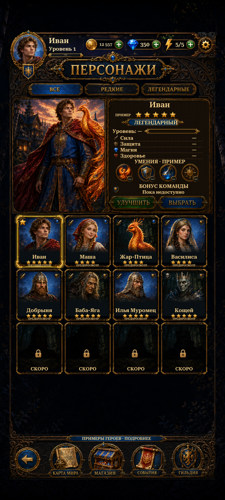

Header and footer follow the safe screen edges. Taller phones show more collection cards while preserving the original art proportions and lettering.
Views below are actual Unity Play Mode captures with isolated saves and simulated phone sizes/safe areas. The shared header and exclusive Ivan highlight are preserved. Original Upgrade and Select lettering does not enable those features: both buttons remain disabled. The existing collection previews and routes are unchanged.

Changes and validation · Remaining reference differences · Verification results